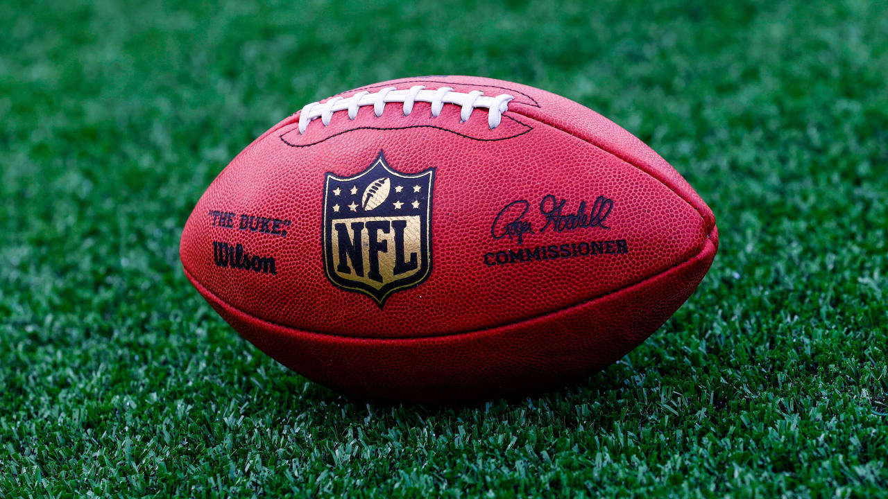
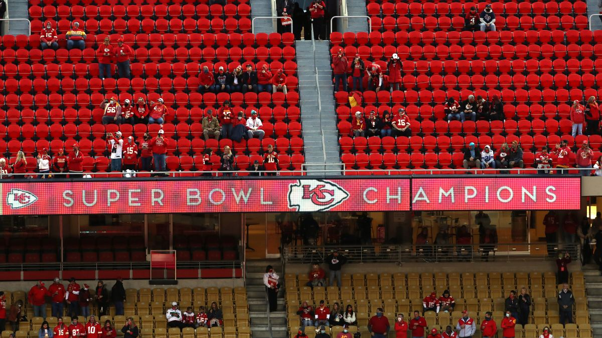
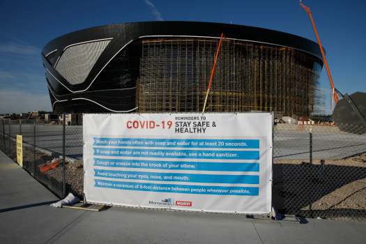

NFL
Context

The NFL did not have to stop play in the middle of their season. They had five months to gather data and prepare for the season. As a result, they pushed back OTA’s and training camp (making it mostly virtual). They also cancelled the entire preseason, four games in August before the season that is meant to serve as practice for the players. Additionally, the NFL implemented numerous policies and procedures in order to limit the spread.
Season

Currently, the NFL is in week 9 of its regular season. Each team has certain guidelines of how many fans may attend games, if at all. With no “bubble” environment like the NBA and NHL There have been many schedule changes due to positive COVID-19 tests on teams resulting in postponements, games being played on Tuesdays, and the shifting of bye weeks and games in order to account for the postponements. After an initial surge at the end of September, the NFL has gone weeks without any further schedule changes, and the season looks like it will be completed. The NFL has issued millions of dollars in fines to players and coaches who violate COVID-19 protocol (e.g. not wearing masks on the sideline). That number will only grow as the season progresses. Click this link to see which players have tested positive for COVID-19 so far.
Future

The future of the 2020 NFL season looks to be secure as of now. The owners have had talks about adjusting and expanding the playoffs if there is another surge in positive tests. As bye weeks pass, the ability of the NFL to change the schedule decreases, so it is increasingly important for players and staff to follow the COVID-19 protocols and for testing to continue to stay robust.
Beyond this season, there could be major impacts. The NFL is under a salary cap system, meaning that each team can only spend a certain amount of money on players each season. The salary cap number is based on the total revenue that the NFL (and its teams) bring in each year. Since there is a limited number or no fans allowed at games, the revenue will be severely decreased this year, and thus the salary cap will be reduced for the first time in decades next year. This means that players who sign new contracts will almost certainly be paid less than they would’ve before, potentially causing them to sign shorter contracts in search of a larger one when the cap recovers. It will be interesting to see how this plays out.